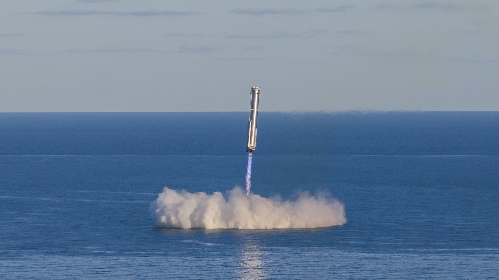
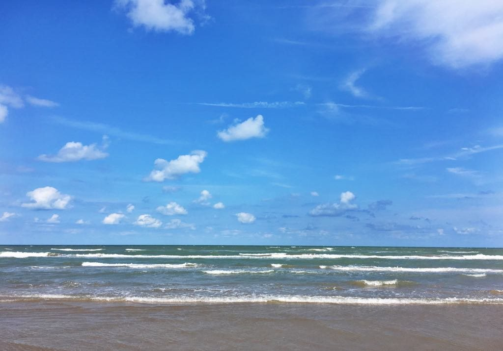
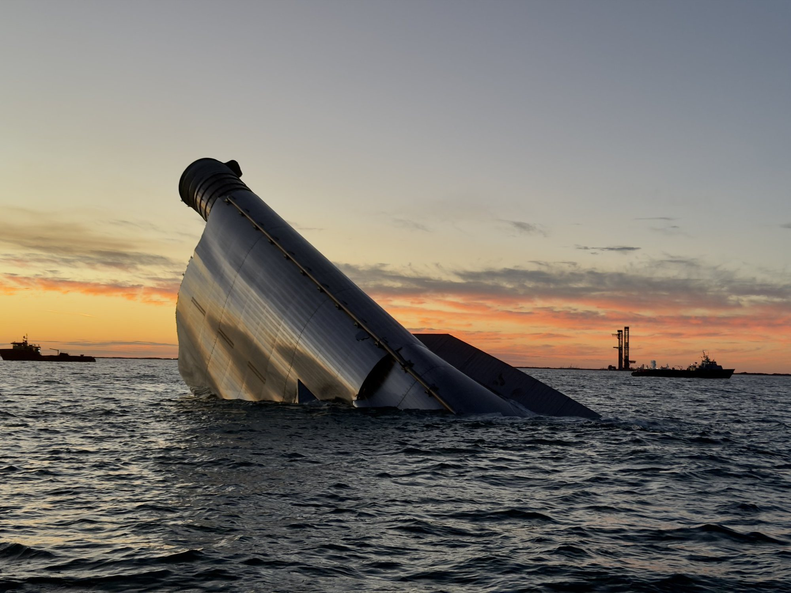

Una settimana fa Starship ha scritto una pagina di storia: Ship 42, la nave di Flight 15, è stata ripresa dai bracci della torre di Starbase dopo quasi un giorno in orbita, come raccontato nel dossier del 14 novembre. Il primo stadio, però, non è tornato a casa. Booster 22 ha interrotto da solo l’avvicinamento alla torre ed è finito nel Golfo del Messico, dove si è distrutto. Quello che restava di lui, o almeno una parte, ha poi preso la strada delle correnti. Ed è arrivato in Messico, dove ha aperto un piccolo caso diplomatico e ambientale.
Che cosa è successo al booster
Flight 15 è partito dal Pad 2 di Starbase venerdì 13 novembre, alle 23:48 ora italiana. Dopo la separazione a caldo Booster 22, il primo Super Heavy della generazione V3 a provare il ritorno alla torre, ha invertito la rotta verso la costa. Pochi minuti più tardi il messaggio in diretta: «Super Heavy has diverted to an offshore splashdown in the Gulf». Il booster aveva abbandonato in automatico la traiettoria verso la rampa e si era diretto in mare, davanti alla costa, dove si è distrutto al momento dell’ammaraggio.
È esattamente il comportamento previsto dalle regole di volo: niente torre se tutti i parametri non sono verdi. Nel messaggio di giovedì SpaceX lo rivendica così: il booster «correctly performed a safe abort when returning for a catch», ha eseguito correttamente un’interruzione di sicurezza durante il ritorno per la presa, e ha concluso la missione con uno splashdown al largo di Starbase. Già il 14 novembre l’azienda aveva fatto sapere che le squadre di recupero erano subito intervenute per mettere in sicurezza l’area, mentre il gruppo Environmental Health and Safety si occupava di raccogliere ogni detrito arrivato a riva sulla spiaggia di Boca Chica, sul lato americano.

Playa Bagdad, quattro giorni dopo
Starbase sorge a pochi chilometri dalla foce del Rio Grande, che qui segna il confine tra Stati Uniti e Messico. Appena a sud della foce c’è Playa Bagdad, la spiaggia di Matamoros, nello stato di Tamaulipas. Martedì 17 novembre, verso le 7:30 del mattino, sulla sabbia hanno cominciato ad arrivare frammenti che gli abitanti hanno subito collegato al razzo.
La Procuraduría Federal de Protección al Ambiente, la Profepa, ha diffuso lo stesso giorno un comunicato. I suoi ispettori, insieme alla Conanp, la commissione per le aree naturali protette, e alla Marina messicana, sorvegliavano la zona già dal giorno del lancio. La raccolta è stata affidata alle brigate di monitoraggio comunitario della Conanp e all’associazione Conibio, mentre la Profepa mette sotto sequestro i materiali e li porta nelle strutture della Marina, dove resteranno custoditi finché l’azienda responsabile non li ritirerà per smaltirli in modo corretto. «Se pedirá a la empresa que se haga responsable», si chiederà all’azienda di farsene carico, ha scritto l’agenzia.
Il primo giorno sono stati raccolti circa 2 chilogrammi di frammenti. La Profepa li descrive così: pezzi rigidi biancastri, con crepe e bordi irregolari, e pezzi chiari tendenti al giallo, ruvidi e porosi. Conibio ha parlato di numeri più alti, oltre 1.500 pezzi di varie dimensioni contati in mattinata e circa 15 chilogrammi raccolti in giornata, che l’associazione attribuisce al rivestimento interno del propulsore, mescolati a rifiuti turistici. L’associazione ha anche segnalato animali marini trovati morti dopo l’incidente, chiedendo di verificare se ci sia un legame con l’esplosione: un collegamento che al momento nessuno ha dimostrato.
Il comunicato ufficiale contiene una precisazione importante. Tra il 13 e il 17 novembre sulla costa ha soffiato un «Norte», il vento freddo da settentrione, con mare alto e un livello dell’acqua di circa 41 centimetri sopra il previsto. Queste condizioni hanno sparso i materiali lungo la riva e reso più difficile la ricerca. Per questo, ammette la Profepa, è possibile che non tutti i residui raccolti vengano dallo stesso evento. Altri frammenti potrebbero essere ancora sul fondale o al largo e arrivare nei prossimi giorni, a Playa Bagdad o altrove lungo la costa di Tamaulipas. Una volta accertata la provenienza e gli eventuali danni, l’agenzia valuterà la responsabilità dell’azienda e le azioni legali possibili, riparazione del danno ambientale compresa.

La risposta di SpaceX
Giovedì 19 novembre, alle 21:38 ora italiana, SpaceX ha pubblicato su X una replica diretta, citando proprio il messaggio della Profepa. Il testo ha tre parti. La prima è la disponibilità: quando sono arrivate le segnalazioni di possibili detriti in territorio messicano, scrive l’azienda, «we immediately mobilized to send specialists», abbiamo subito mobilitato specialisti per aiutare a identificarli e guidare l’eventuale pulizia, come già fatto sulla spiaggia di Boca Chica. SpaceX dice di restare in contatto con il governo messicano e di essere pronta a inviare supporto se le autorità lo riterranno davvero necessario.
La seconda parte è il dubbio. I partner sul posto, riferisce SpaceX, hanno trovato «very little debris» nei loro passaggi sulla spiaggia, e quel poco «are not clearly from SpaceX operations»: non è chiaramente legato alle attività dell’azienda. La terza è un attacco. La maggior parte dei post online che parlano di detriti e danni diffusi, scrive SpaceX, sono «either outright fabrications or intentionally misleading», invenzioni pure o volutamente fuorvianti. L’azienda ricorda poi che test indipendenti, comprese analisi di tossicità, hanno confermato che i materiali di Starship e del Super Heavy non presentano rischi chimici, biologici o tossicologici.
La chiusura guarda avanti: Starship è progettata per essere completamente riutilizzabile, e nelle missioni future tutto l’hardware dovrebbe tornare al sito di lancio per essere ripreso dalla torre e riutilizzato. SpaceX sottolinea di essere l’unica, «whether company or country», azienda o Paese, ad aver dimostrato che è possibile. È un modo per dire che il problema dei detriti in mare è destinato a ridursi man mano che i catch diventeranno la regola.

Due versioni da mettere in fila
Le due posizioni non sono del tutto inconciliabili. La Profepa non afferma che tutti i frammenti vengano dal booster e lascia aperta l’ipotesi di materiali di altra origine portati dal mare grosso. SpaceX non nega che possano esserci suoi detriti in acque messicane e si dice pronta a raccoglierli. Il disaccordo vero riguarda la quantità e il tono: da una parte un’agenzia che sequestra i materiali e prepara il terreno per chiedere conto all’azienda, dall’altra una società che parla di poco materiale e di una campagna di disinformazione sui social.
Non è la prima volta. A giugno 2025, dopo l’esplosione di Ship 36 durante una prova a terra a Massey’s, frammenti erano arrivati sulla stessa costa e la presidente messicana Claudia Sheinbaum aveva detto che il governo valutava azioni legali. Il tema torna ogni volta che un veicolo di Starbase si distrugge vicino alla costa: il sito è a ridosso del confine, e il Golfo non distingue tra acque americane e messicane.
Intanto a Starbase si prepara il prossimo volo
Mentre a Matamoros si contano i frammenti, a Starbase il lavoro non si ferma. Giovedì 19 novembre, nel pomeriggio americano, Ship 44 ha lasciato la zona di produzione e ha percorso la Highway 4 fino a Massey’s, il sito delle prove a freddo, per la sua campagna criogenica. Venerdì mattina presto, ora del Texas, l’ha seguita Booster 24, partito verso lo stesso sito approfittando di una chiusura della strada. È la coppia che gli osservatori di Starbase associano a Flight 17.
Il volo successivo, Flight 16, era indicato come il possibile debutto di Starship dalla Florida, dal complesso 39A del Kennedy Space Center, con Booster 23 e Ship 43. Alcuni osservatori non escludono ora che SpaceX scelga prima una ripetizione di Flight 15 da Starbase. SpaceX non ha annunciato né la data né il sito del prossimo lancio, e Ship 42, come ha detto Musk, resterà a terra in esposizione.
Che cosa aspettarsi adesso
Sul fronte messicano i punti da seguire sono tre: l’esito delle analisi della Profepa sull’origine dei frammenti, eventuali nuovi arrivi sulla costa nei prossimi giorni, e la possibile richiesta formale all’azienda di ritirare e smaltire il materiale sequestrato. Se la provenienza sarà confermata, si aprirà il capitolo delle responsabilità. Sul fronte tecnico, SpaceX dovrà spiegare perché Booster 22 ha rinunciato al catch: è la risposta che conta di più, perché ogni booster ripreso dalla torre è un booster che non finisce in mare, né sulle spiagge di nessuno.
Il dossier sulle parole di Musk alla DealBook Summit e al TomorrowX Summit passa all’archivio Notizie: questa pagina mette in primo piano il seguito meno celebrato di Flight 15, i detriti del booster arrivati in Messico e la replica di SpaceX.
Fonti pubbliche e tracce
Ultimo aggiornamento editoriale: 20 novembre 2026. Nel corpo non si ripete la fonte a ogni frase: le tracce sono raccolte qui. Le citazioni sono riportate in lingua originale con traduzione italiana; le quantità di detriti sono stime delle singole organizzazioni, non dati verificati in modo indipendente.
- Profepa, comunicato del 17 novembre 2026: arrivo dei residui a Playa Bagdad alle 7:30, ruolo di Conanp, Conibio e Semar, circa 2 kg raccolti il primo giorno, descrizione dei frammenti, «Norte» e livello del mare 41 cm sopra il previsto, possibile origine diversa di parte dei materiali, custodia presso la Marina fino al ritiro da parte dell’azienda.
- Profepa su X, 17 novembre 2026: ispettori a Playa Bagdad, raccolta in corso, «se pedirá a la empresa que se haga responsable»; aggiornamento del 18 novembre.
- SpaceX su X, 19 novembre 2026: «safe abort» del booster, specialisti mobilitati, contatti con il governo messicano, «very little debris», «not clearly from SpaceX operations», post online «outright fabrications or intentionally misleading», test di tossicità, riutilizzabilità completa.
- SpaceX su X, 14 novembre 2026: squadre di recupero sul posto dopo lo splashdown e raccolta dei detriti arrivati a Boca Chica.
- SpaceX su X, 14 novembre 2026: video di accensione di atterraggio e splashdown di Booster 22, da cui sono tratte la copertina e una figura.
- La Jornada, 17 novembre 2026: oltre 1.500 pezzi raccolti da Conibio entro le 10:30, frammenti del rivestimento interno del propulsore mescolati a rifiuti turistici.
- El Economista (AFP), 17 novembre 2026: circa 15 kg raccolti da Conibio, dichiarazioni del presidente Elías Ibarra.
- Excélsior, 18 novembre 2026: valutazione della responsabilità dell’azienda e riparazione del danno ambientale, segnalazione di Conibio su fauna marina morta.
- AP, 19 novembre 2026: SpaceX mette in dubbio la provenienza dei detriti.
- NASASpaceflight su X, 19 novembre 2026: Ship 44 lungo la Highway 4 verso Massey’s, indicata come veicolo di Flight 17; 20 novembre: Booster 24 verso Massey’s; ipotesi su Flight 16 da Starbase e Flight 17 dal 39A.
Fotografie utilizzabili
Non esistono fotografie a licenza libera dei detriti a Playa Bagdad né dello splashdown di Booster 22. La copertina e la frenata del booster sono fotogrammi del video ufficiale SpaceX dello splashdown pubblicato su X il 14 novembre, usati con credito SpaceX · uso editoriale non commerciale. La foto di Playa Bagdad è un’immagine d’archivio del luogo, di Gerardoprz, CC BY-SA 4.0, da Wikimedia Commons. Dettagli in scheda dei crediti fotografici.
Apri il dossier su Ship 42 in esposizione e i piani di Musk, archiviato · Archivio Notizie · Torna a SpaceX